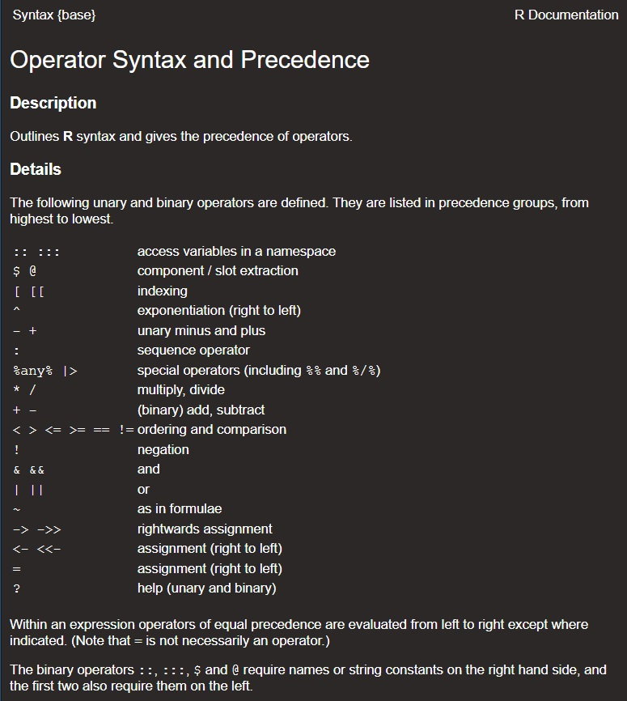

Chapter 3 R programming
In the following, we will consider base R concepts that are important but often overlooked by or unknown to R users. We hope that this chapter will help you to better understand R as a programming language, to avoid common mistakes, and to write more efficient code.
Some of the examples used in this chapter are taken from The R Inferno by Patrick Burns, who described his materials in the following way:
If you are using R and you think you’re in hell, this is a map for you.
3.1 Common mistakes to avoid
In the first part of this chapter, we will look at some common mistakes and how to avoid them.
3.1.1 The floating-point error
In R, a real number is represented as a floating-point number. A floating-point number is a positive or negative whole number scaled by an integer exponent of a fixed base.

It is actually not that complicated. For example, 12.568 is a floating-point number in base ten with five digits of precision:
\[
12.568 = \underbrace{12568}_\text{whole number} \times {\underbrace{10}_\text{base}}^{\overbrace{-3}^\text{integer exponent}}
\]
Base ten is the most convenient base to understand how floating-point numbers are represented. But you can use any base. For example, in base five, 12.568 is represented by
\[
12.568 = \underbrace{22241}_\text{whole number} \times {\underbrace{5}_\text{base}}^{\overbrace{-3}^\text{integer exponent}},
\]
i.e. a floating-point number with five digits of precision. You can validate that this is indeed the right representation
\[
\begin{align*}
22241 \times 5^{-3} &= (2 \times 5^{4} + 2 \times 5^{3} + 2 \times 5^{2} + 4 \times 5^{1} + 1 \times 5^{0}) \times 5^{-3}\\
&= 2 \times 5^{1} + 2 \times 5^{0} + 2 \times 5^{-1} + 4 \times 5^{-2} + 1 \times 5^{-3}\\
&= 10 + 2 + 0,4 + 0,16 + 0.008\\
&= 12.568.
\end{align*}
\]
In base two, the representation is more complex:
\[
12.568 = \underbrace{1100 1001 0001 0110 1000 0111 0010 1011 0000 0010 0000 1100 0100 1001 1011 1010 011}_\text{whole number} \times {\underbrace{2}_\text{base}}^{\overbrace{-60}^\text{integer exponent}},
\]
but it still has the same form; a positive whole number with 64 digits of precision times the base to the power -60.
Not all real numbers can be represented by a floating-point number with a predefined precision. The base and the number of digits regulate how precisely a floating point number can be represented. For example, you cannot represent 12.568 as a floating-point number with four digits of precision in base ten, five or two. The nearest whole number of 12586 with only four digits of precision is 1257. Hence, the closest we can get to 12.568 using only four digits of precision in base ten is 12.57. Not too bad. The nearest whole number of 22241 with only four digits of precision is 2224. Therefore, the closest we can get to 12.568 using only four digits of precision in base five is 12.56. A bit worse than in base ten. However, the nearest whole number of 1100100100010110100001110010101100000010000011000100100110111010011 with only four digits of precision in base 2 is 1100. This means that the closest we can get to 12.568 using only four digits of precision in base five is 12. A difference of 0.568 may not be problematic in some cases, but it can be catastrophic in others.
R uses base 2 with (usually) 53 digits of precision. Hence, all floating-point numbers with more than 53 digits of precision will be represented by the nearest floating-point number with 53 digits of precision.
For example, take the real number 0.3. In base two, 0.3 is represented by 0.0100110011001100110011001100… (a number with infinitely many digits of precision). The nearest floating-point number with only 53 digits of precision is 0.299999999999999988897769753748434595763683319091796875, which is the floating-point number R uses to represent 0.3.
The binary representation is not perfect, but it is the best approximation R has.
When you assign the value 0.3 to an object and print the object to the console afterwards, you will see that R returns 0.3:
So you may think Why did you bother me with all that talk about floating-point numbers? There is clearly no problem here!
However, per default, the function print() only prints 7 significant digits when printing numeric values.
If you increase that number to 22, you can see that 0.3 is actually represented by 0.2999999999999999888978
This inaccuracy is known as the floating-point error, and it is the reason why simple comparisons like the following can fail:
Instead of using == to compare two objects, use the base R function all.equal() to test if two objects are equal up to some tolerance (\(1.5\times 10^{-8}\) per default).
all.equal(0.1 + 0.2, 0.3)
#> [1] TRUE
all.equal(0.1 + 0.2, 0.3, tolerance = 0)
#> [1] "Mean relative difference: 1.850372e-16"
all.equal(0.1 + 0.2, 0.3, tolerance = 1e-16)
#> [1] "Mean relative difference: 1.850372e-16"
all.equal(0.1 + 0.2, 0.3, tolerance = 1e-15)
#> [1] TRUEAs all.equal() returns either TRUE or a string with the mean relative difference, you cannot use it directly in if expressions. Use isTRUE(all.equal()) instead:
Alternatively, you can use the dplyr function near()
3.1.2 The ... argument
Another source of mistakes often occur in connection to arguments. To illustrate the problem, let us consider a simple example. Assume we have three observations \(-1, 5 \text{ and }118\), and we want to find the minimum, maximum, mean, and median in R. We know that we can use the functions min(), max(), mean(), and median() to obtain the desired numbers, so we run the following code:
min(-1, 5, 118)
#> [1] -1
max(-1, 5, 118)
#> [1] 118
mean(-1, 5, 118)
#> [1] -1
median(-1, 5, 118)
#> [1] -1The first two numbers are correct, but what is happening with the last two function calls?
The problem is that the four functions take different arguments. Let us take a look at the arguments for max() first:
The first argument is ... (dot dot dot). The three dots represent a special argument that allows functions to take any number of arguments - besides all other specified arguments. This means ... will take all unnamed arguments passed to the function. In the example above, none of the parameters are specified by name, and max() will use \(-1, 5 \text{ and }118\) to compute the maximum value.
This is different in connection to the function mean():
The first argument is x, which is followed by .... As all parameters are unnamed in the function call mean(-1, 5, 118), mean() takes the first value \(-1\) to compute the mean, and passes all other arguments to another function. Therefore, mean(-1, 5, 118) returns \(-1\).
In this simple example, one solution is to store all observations in a vector and pass the vector to the functions:
min(c(-1, 5, 118))
#> [1] -1
max(c(-1, 5, 118))
#> [1] 118
mean(c(-1, 5, 118))
#> [1] 40.66667
median(c(-1, 5, 118))
#> [1] 5In more complex cases, you have to be more cautious. When a function has ... as one of its arguments, misspelled or non-existing arguments will simple be passed on and not raise an error. This increases the change of typos or wrong computations to go unnoticed. Furthermore, the argument ... is greedy, which is why you often have to name all arguments that you want to pass to the function.
max(c(-1, 5, 118, NA))
#> [1] NA
max(c(-1, 5, 118, NA), TRUE)
#> [1] NA
max(c(-1, 5, 118, NA), na.rm = TRUE)
#> [1] 118If you want to know what other arguments ... represents, you can look in the function documentation. The function plot(), for example, takes the arguments .... When you read the function documentation (by running ?plot), you can see that ... represents other graphical parameters, and the documentation refers to the documentation for graphical parameters for details.
3.1.3 Others
R has many base functions that behave differently than you may expect. One of them is sample(). sample() creates a sample of a specified size from the elements of the first argument x with or without replacement. The most common use of sample() is probably to let x be a vector:
But have you ever tried to pass a single number? Or even a real number?
What do you thinkR returns?
Show me!
Did you expect this outcome? In case you are confused, here is the reason why:.
The first argument of sample() is x. x can either be a vector of one or more elements from which to choose, or a positive integer. If x has length one, is numeric and larger than 1, the sampling will take place from the sequence 1:x. On the other hand, 1:x generates a vector of real numbers; starting with 1 and increasing with 1 until the upper limit x is reached. Hence, when x = 10.1, 1:x is equal to the sequence 1,2,...,10, and sample(x) is equivalent to sample(1:10).
This leads us to the next base R function with an unexpected behavior; the colon operator :. It can be used to generate regular sequences and is equivalent to seq() (if from and to are not factors). Do you know what the output of the following code will be?
Show me!
The result is the sequence from 0 to 9; not 1 to 9. To understand why 1:n-1 returns 0,1,...,9, we take a look at the syntax documentation (?Syntax):

The documentation shows that the colon operator : has a higher precedence than the operator -. Hence, 1:n is evaluated first, and - is evaluated afterwards (1:n-1 is equivalent to (1:n)-1). To obtain a sequence from 1 to 9, we can change the order of evaluation by using parentheses:
Alternatively, we could use the function seq_len() to create a sequence that starts at 1 and with steps of 1 finishes at the number passed to the function.
1:n and seq_len(n), which we will look at in the final example!
What does the colon operator return when n is equal to 0?
Show me!
Did you expect the output to be 1, 0? The colon operator can also generate a sequence from from to to in steps of -1 (when to < from). This behavior can be useful in general, but when : is used in a for loop it is often undesired. In situations like that, use the function seq_len() instead. When zero is passed as an argument, seq_len returns a empty integer vector (integer(0)):
seq_len() also has a sibling, seq_along(), that can be used generate a sequence that is as long as another vector. More precisely, if x is a vector of length \(\geq\) 1, seq_along(x) is a shortcut for seq_len(length(x)):
3.2 Data structures
3.2.1 Types
There are several “atomic” types of data: logical, integer, double and character (in this order, see below). There are also raw and complex, but they are rarely used.
You cannot mix types in an atomic vector, but you can in a list. Coercion will automatically occur when you mix types in a vector:
#> [1] FALSE#> [1] "logical"#> [1] 1 2 3 4 5 6 7 8 9 10#> [1] "integer"#> [1] 0 1 2 3 4 5 6 7 8 9 10#> [1] 10.5#> [1] "double"#> [1] 1.0 2.0 3.0 4.0 5.0 6.0 7.0 8.0 9.0 10.0 10.5#> [1] "1" "2" "3" "4" "5" "6" "7" "8" "9" "10" "10.5" "a"#> [[1]]
#> [1] 1
#>
#> [[2]]
#> [1] "a"#> [1] TRUE3.2.2 Exercise
Use the automatic type coercion to convert this boolean matrix to a numeric one (with 0s and 1s). [What do you need to change in your code to get an integer matrix instead of a numeric one?]
#> [,1] [,2] [,3] [,4]
#> [1,] TRUE TRUE FALSE FALSE
#> [2,] FALSE TRUE FALSE FALSE
#> [3,] TRUE TRUE FALSE FALSE3.3 Base objects and accessors
3.3.1 Objects
“atomic” vector: vector of one base type (see above).
scalar: this doesn’t exist, this is a vector of length 1.
matrices / arrays: a vector with some dimensions (attribute).
#> [1] 1 2 3 4 5 6 7 8 9 10 11 12#> [,1] [,2] [,3] [,4]
#> [1,] 1 4 7 10
#> [2,] 2 5 8 11
#> [3,] 3 6 9 12#> [1] "matrix" "array"#> , , 1
#>
#> [,1] [,2]
#> [1,] 1 4
#> [2,] 2 5
#> [3,] 3 6
#>
#> , , 2
#>
#> [,1] [,2]
#> [1,] 7 10
#> [2,] 8 11
#> [3,] 9 12#> [1] "array"list: vector of elements with possibly different types in it.
data.frame: a list whose elements have the same lengths, and formatted somewhat as a matrix.
#> Sepal.Length Sepal.Width Petal.Length Petal.Width Species
#> 1 5.1 3.5 1.4 0.2 setosa
#> 2 4.9 3.0 1.4 0.2 setosa
#> 3 4.7 3.2 1.3 0.2 setosa
#> 4 4.6 3.1 1.5 0.2 setosa
#> 5 5.0 3.6 1.4 0.2 setosa
#> 6 5.4 3.9 1.7 0.4 setosa#> [1] 150 5#> [1] 53.3.2 Accessors
- The
[accessor is used to access a subset of the data with the same class.
#> [1] 1 2 3 4 5#> [1] 2 3#> [1] 2 3 4 5 NA NA NA#> [,1] [,2] [,3] [,4]
#> [1,] 1 4 7 10
#> [2,] 2 5 8 11
#> [3,] 3 6 9 12#> [1] 4 5 6 7 8 9#> $a
#> [1] 1
#>
#> $b
#> [1] "I love R"
#>
#> $c
#> [,1] [,2] [,3]
#> [1,] 1 3 5
#> [2,] 2 4 6#> $b
#> [1] "I love R"
#>
#> $c
#> [,1] [,2] [,3]
#> [1,] 1 3 5
#> [2,] 2 4 6#> Sepal.Length Sepal.Width Petal.Length Petal.Width Species
#> 1 5.1 3.5 1.4 0.2 setosa
#> 2 4.9 3.0 1.4 0.2 setosa
#> 3 4.7 3.2 1.3 0.2 setosa
#> 4 4.6 3.1 1.5 0.2 setosa
#> 5 5.0 3.6 1.4 0.2 setosa
#> 6 5.4 3.9 1.7 0.4 setosa#> Petal.Length Petal.Width
#> 1 1.4 0.2
#> 2 1.4 0.2
#> 3 1.3 0.2
#> 4 1.5 0.2
#> 5 1.4 0.2
#> 6 1.7 0.4#> [1] "data.frame"You can also use a logical and character vectors to index these objects.
#> [1] 1 2 3 4#> [1] 2 4#> [1] 2 4#> Petal.Length Species
#> 1 1.4 setosa
#> 2 1.4 setosa
#> 3 1.3 setosa
#> 4 1.5 setosa
#> 5 1.4 setosa
#> 6 1.7 setosa- The
[[accessor is used to access a single element.
#> [1] 1 2 3 4 5 6 7 8 9 10#> [1] 3#> [1] "I love R"#> [1] setosa setosa setosa setosa setosa setosa setosa
#> [8] setosa setosa setosa setosa setosa setosa setosa
#> [15] setosa setosa setosa setosa setosa setosa setosa
#> [22] setosa setosa setosa setosa setosa setosa setosa
#> [29] setosa setosa setosa setosa setosa setosa setosa
#> [36] setosa setosa setosa setosa setosa setosa setosa
#> [43] setosa setosa setosa setosa setosa setosa setosa
#> [50] setosa versicolor versicolor versicolor versicolor versicolor versicolor
#> [57] versicolor versicolor versicolor versicolor versicolor versicolor versicolor
#> [64] versicolor versicolor versicolor versicolor versicolor versicolor versicolor
#> [71] versicolor versicolor versicolor versicolor versicolor versicolor versicolor
#> [78] versicolor versicolor versicolor versicolor versicolor versicolor versicolor
#> [85] versicolor versicolor versicolor versicolor versicolor versicolor versicolor
#> [92] versicolor versicolor versicolor versicolor versicolor versicolor versicolor
#> [99] versicolor versicolor virginica virginica virginica virginica virginica
#> [106] virginica virginica virginica virginica virginica virginica virginica
#> [113] virginica virginica virginica virginica virginica virginica virginica
#> [120] virginica virginica virginica virginica virginica virginica virginica
#> [127] virginica virginica virginica virginica virginica virginica virginica
#> [134] virginica virginica virginica virginica virginica virginica virginica
#> [141] virginica virginica virginica virginica virginica virginica virginica
#> [148] virginica virginica virginica
#> Levels: setosa versicolor virginica![Indexing lists in R. [Source: https://goo.gl/8UkcHq]](https://pbs.twimg.com/media/DQ5en8XWAAICIaJ.jpg)
Figure 3.1: Indexing lists in R. [Source: https://goo.gl/8UkcHq]
- Beware partial matching
#> [1] 1 2 3 4 5#> NULL#> [1] 1 2 3 4 5- Special use of the
[accessor for array-like data.
#> [,1] [,2] [,3] [,4]
#> [1,] 1 4 7 10
#> [2,] 2 5 8 11
#> [3,] 3 6 9 12#> [1] 1 4 7 10#> [,1] [,2]
#> [1,] 1 4
#> [2,] 2 5
#> [3,] 3 6#> [1] 1 4#> [,1] [,2]
#> [1,] 1 4#> [,1] [,2]
#> [1,] 1 1
#> [2,] 3 4
#> [3,] 2 2#> [1] 1 12 5#> [,1] [,2] [,3] [,4]
#> [1,] 1 4 7 10
#> [2,] 2 5 8 11
#> [3,] 3 6 9 12#> [,1] [,2] [,3] [,4]
#> [1,] 2 2 2 2
#> [2,] 2 2 2 2
#> [3,] 2 2 2 2If you use arrays with more than two dimensions, simply add an additional comma for every new dimension.
3.3.3 Exercises
Use the dimension attribute to make a function that computes the sums every n elements of a vector. In which order are matrix elements stored? [Which are the special cases that you should consider?]
#> [1] 3 7 11 15 19Compute the means of every numeric columns of the
irisdataset. Expected result:#> Sepal.Length Sepal.Width Petal.Length Petal.Width #> 5.843333 3.057333 3.758000 1.199333Convert the following matrix to a vector by replacing (0, 0) -> 0; (0, 1) -> 1; (1, 1) -> 2; (1, 0) -> NA.
#> [,1] [,2] #> [1,] 0 0 #> [2,] 0 1 #> [3,] 0 0 #> [4,] 0 0 #> [5,] 1 1 #> [6,] 0 1 #> [7,] 0 1 #> [8,] 1 0 #> [9,] 1 1 #> [10,] 0 0by using this matrix:
#> [,1] [,2] #> [1,] 0 1 #> [2,] NA 2Start by doing it for one row, then by using
apply(), finally replace it by a special accessor; what is the benefit?Expected result:
#> [1] 0 1 0 0 2 1 1 NA 2 0
3.4 Useful R base functions
In this section, I present some useful R base functions (also see this comprehensive list in French and this one in English):
3.4.1 General
#> 'data.frame': 150 obs. of 5 variables:
#> $ Sepal.Length: num 5.1 4.9 4.7 4.6 5 5.4 4.6 5 4.4 4.9 ...
#> $ Sepal.Width : num 3.5 3 3.2 3.1 3.6 3.9 3.4 3.4 2.9 3.1 ...
#> $ Petal.Length: num 1.4 1.4 1.3 1.5 1.4 1.7 1.4 1.5 1.4 1.5 ...
#> $ Petal.Width : num 0.2 0.2 0.2 0.2 0.2 0.4 0.3 0.2 0.2 0.1 ...
#> $ Species : Factor w/ 3 levels "setosa","versicolor",..: 1 1 1 1 1 1 1 1 1 1 ...#> [1] "a" "b" "c" "d" "decode" "l"
#> [7] "mat" "n" "two_col_ind" "vec" "x" "y"# Remove objects from the environment
rm(list = ls()) ## remove all objects in the global environment#> [1] summary.aov summary.aovlist*
#> [3] summary.aspell* summary.check_packages_in_dir*
#> [5] summary.connection summary.data.frame
#> [7] summary.Date summary.default
#> [9] summary.ecdf* summary.factor
#> [11] summary.glm summary.infl*
#> [13] summary.lm summary.loess*
#> [15] summary.manova summary.matrix
#> [17] summary.mlm* summary.nls*
#> [19] summary.NullVerbose* summary.packageStatus*
#> [21] summary.POSIXct summary.POSIXlt
#> [23] summary.ppr* summary.prcomp*
#> [25] summary.princomp* summary.proc_time
#> [27] summary.rlang:::list_of_conditions* summary.rlang_error*
#> [29] summary.rlang_message* summary.rlang_trace*
#> [31] summary.rlang_warning* summary.srcfile
#> [33] summary.srcref summary.stepfun
#> [35] summary.stl* summary.table
#> [37] summary.tukeysmooth* summary.vctrs_sclr*
#> [39] summary.vctrs_vctr* summary.Verbose*
#> [41] summary.warnings
#> see '?methods' for accessing help and source code#> [1] add1 alias anova case.names coerce
#> [6] confint cooks.distance deviance dfbeta dfbetas
#> [11] drop1 dummy.coef effects extractAIC family
#> [16] formula hatvalues influence initialize kappa
#> [21] labels logLik model.frame model.matrix nobs
#> [26] plot predict print proj qr
#> [31] residuals rstandard rstudent show simulate
#> [36] slotsFromS3 summary variable.names vcov
#> see '?methods' for accessing help and source code#> [[1]]
#> [1] 1
#>
#> [[2]]
#> [1] 2
#>
#> [[3]]
#> [1] 3
#>
#> [[4]]
#> [1] 4
#>
#> [[5]]
#> [1] 5#> [1] 1 2 3 4 53.4.2 Sequence and vector operations
#> [1] 1 2 3 4 5 6 7 8 9 10#> [1] 1 3 5 7 9#> [1] 1 12 23 34 45 56 67 78 89 100#> [1] 1 2 3 4 5#> [1] 1 2 3 4#> [1] 1 2 3 4 1 2 3 4#> [1] 1 1 2 2 3 3 4 4#> [1] 1 1 1 1 2 2 2 3 3 4#> [1] 1 2 3 1 2 3 1 2#> [,1] [,2] [,3] [,4] [,5]
#> [1,] -1.19192296 0.94750774 0.3919026 -0.09699983 1.05690815
#> [2,] 0.09522232 0.04034512 -0.9170546 0.16581719 0.05138688
#> [3,] -1.10195544 -0.15967928 0.9530562 0.39466216 -0.26813545
#> [4,] 0.27292119 1.55459674 0.2876434 0.18288438 -0.41902131
#> [5,] 0.75294904 -1.01328046 -1.3512831 1.36228630 0.01329795
#> [6,] 0.84222347 -2.01222515 0.5560569 0.01422063 1.11053197
#> [7,] 0.67385318 0.77888731 -1.0265060 -1.14963030 1.64388104
#> [8,] -0.75574961 0.23813706 0.7360107 -1.44594474 0.09781558
#> [9,] 1.35639315 1.87077314 -0.5936761 -0.95254520 1.53045659
#> [10,] 1.57172531 -1.54669691 0.7738539 -0.77008059 -0.21271826#> [1] 1 2 2 6 8#> [1] 1 5 4 2 3#> [1] 1.0 4.0 5.0 2.5 2.5#> [1] 1 4 5 2 3#> [1] "a1" "a10" "a2"#> [1] "a1" "a2" "a10"#> [1] 4#> [1] 6#> [1] 1 NA 2 3#>
#> 1 2 3 4
#> 4 3 2 1#> B
#> A 1 2
#> 1 2 1
#> 2 1 1#> [1] 1 10 9 4 7 8 6 2 5 3#> [1] 10 6 4 5 7#> [1] 7 4 7 8 3 4 9 9 8 8 6 8 4 3 6 6 8 7 9 4 5 6 7 6 5 3 7 9
#> [29] 6 8 10 8 6 10 7 8 7 9 6 5 4 5 7 4 9 7 7 9 9 4#> [1] 24 68 79 85 94 42 76 0 79 56#> [1] 24.32 67.60 78.86 84.71 93.54 42.27 76.45 0.35 79.22 56.30#> [1] 20 70 80 80 90 40 80 0 80 60#> [1] 1 2 2 1#> [1] 4 3 3 4#> [,1] [,2] [,3]
#> [1,] 2 3 4
#> [2,] 3 4 5
#> [3,] 4 5 6
#> [4,] 5 6 7#> param1 param2
#> 1 5 1
#> 2 50 1
#> 3 5 3
#> 4 50 3
#> 5 5 10
#> 6 50 10Also see this nice Q/A on grouping functions and the *apply family and this book chapter about looping.
3.4.3 Character operations
#> [1] "I am me"#> [1] "test0"#> [1] "PC1" "PC2" "PC3" "PC4" "PC5" "PC6" "PC7" "PC8" "PC9" "PC10"#> I am Florian#> [1] "./good-practices.Rmd" "./index.Rmd"
#> [3] "./intro.Rmd" "./packages.Rmd"
#> [5] "./performance.Rmd" "./presentation_project.Rmd"
#> [7] "./r-markdown.Rmd" "./r-programming.Rmd"
#> [9] "./shiny.Rmd" "./tidyverse.Rmd"#> [1] "./good-practices.pdf" "./index.pdf"
#> [3] "./intro.pdf" "./packages.pdf"
#> [5] "./performance.pdf" "./presentation_project.pdf"
#> [7] "./r-markdown.pdf" "./r-programming.pdf"
#> [9] "./shiny.pdf" "./tidyverse.pdf"#> [1] "d" "d" "d" "c" "c" "d" "c" "a" "c" "b"#> [1] 4 4 4 3 3 4 3 1 3 2#> [1] FALSE FALSE FALSE FALSE FALSE FALSE FALSE TRUE FALSE TRUE#> $a
#> [1] 1 4 7 10
#>
#> $b
#> [1] 2 5 8 11
#>
#> $c
#> [1] 3 6 9 12#> [1] "c" "d"#> [1] "a" "b" "c" "d" "e"#> [1] "a" "b"3.4.4 Logical operators
#> Error in eval(expr, envir, enclos): will go there#> [1] TRUE#> [1] FALSE FALSE TRUE FALSE#> Error in c(TRUE, FALSE, TRUE, TRUE) && c(FALSE, TRUE, TRUE, FALSE): 'length = 4' in coercion to 'logical(1)'#> [1] -0.8367679 0.2914411 0.4888529 0.2318863 0.0595000 -0.7143494 -0.5144844
#> [8] -0.7243663 -2.6855535 -0.7423000#> [1] 0.8367679 0.2914411 0.4888529 0.2318863 0.0595000 0.7143494 0.5144844 0.7243663
#> [9] 2.6855535 0.7423000Beware with ifelse() (learn more there), for example
#> [1] 1#> [1] 1 2 3 4 5#> [1] 1 2 3 4 53.4.5 Exercises
Use
sample(),rep_len()andsplit()to make a function that randomly splits some indices in a list ofKgroups of indices (like for cross-validation). [Which are the special cases that you should consider?]#> $`1` #> [1] 5 8 10 19 21 24 27 29 30 32 33 36 37 40 #> #> $`2` #> [1] 1 2 3 6 11 15 18 20 22 23 26 28 38 #> #> $`3` #> [1] 4 7 9 12 13 14 16 17 25 31 34 35 39Use
replicate()andsample()to get a 95% confidence interval (using bootstrapping) for the mean of the following vector:#> [1] -0.6264538 0.1836433 -0.8356286 1.5952808 0.3295078 -0.8204684 0.4874291 #> [8] 0.7383247 0.5757814 -0.3053884#> [1] 0.1322028Expected output (approximately):
#> 2.5% 97.5% #> -0.3145143 0.5998608Use
match()and some special accessor to add a column “my_val” to this datamy_mtcarsby putting the corresponding value of the column specified in “my_col”. [Can your solution be used for any number of column names?]my_mtcars <- mtcars[c("mpg", "hp")] my_mtcars$my_col <- sample(c("mpg", "hp"), size = nrow(my_mtcars), replace = TRUE) head(my_mtcars)#> mpg hp my_col #> Mazda RX4 21.0 110 mpg #> Mazda RX4 Wag 21.0 110 mpg #> Datsun 710 22.8 93 hp #> Hornet 4 Drive 21.4 110 hp #> Hornet Sportabout 18.7 175 mpg #> Valiant 18.1 105 hpExpected result (head):
#> mpg hp my_col my_val #> Mazda RX4 21.0 110 mpg 21.0 #> Mazda RX4 Wag 21.0 110 mpg 21.0 #> Datsun 710 22.8 93 hp 93 #> Hornet 4 Drive 21.4 110 hp 110 #> Hornet Sportabout 18.7 175 mpg 18.7 #> Valiant 18.1 105 hp 105In the following data frame (recall that a data frame is also a list), for the first 3 columns, replace letters by corresponding numbers based on the
code:df <- data.frame( id1 = c("a", "f", "a"), id2 = c("b", "e", "e"), id3 = c("c", "d", "f"), inter = c(7.343, 2.454, 3.234), stringsAsFactors = FALSE ) df#> id1 id2 id3 inter #> 1 a b c 7.343 #> 2 f e d 2.454 #> 3 a e f 3.234#> a b c d e f #> 1 2 3 4 5 6Expected result:
#> id1 id2 id3 inter #> 1 1 2 3 7.343 #> 2 6 5 4 2.454 #> 3 1 5 6 3.234
3.5 Environments and scoping
Lexical scoping determines where to look for values, not when to look for them. R looks for values when the function is run, not when it’s created. This means that the output of a function can be different depending on objects outside its environment:
#> [1] 11Variable x is not defined inside f so R will look at the environment of f (where f was defined) and then at the parent environment, and so on. Here, the first x that is found has value 10.
Be aware that for functions, packages environments are checked last so that you can redefine functions without noticing.
#> [1] "123"#> [1] 1 2 3#> [1] 1 2 3You can use the <<- operator to change the value of an object in an upper environment:
count1 <- 0
count2 <- 0
f <- function(i) {
count1 <- count1 + 1 ## will assign a new (temporary) count1 each time
count2 <<- count2 + 1 ## will increment count2 on top
i + 1
}
sapply(1:10, f)#> [1] 2 3 4 5 6 7 8 9 10 11#> [1] 0 10Finally, how does ... work? Basically, you copy and paste what is put in ...:
#> $a
#> [1] 2
#>
#> $b
#> [1] 3#> $a
#> [1] 2
#>
#> $b
#> [1] 3Learn more about functions and scoping rules of R with the R Programming for Data Science book.
3.6 Attributes and classes
Attributes are metadata associated with an object. You can get/set the list of attributes with attributes() or one particular attribute with attr().
#> $names
#> [1] "Sepal.Length" "Sepal.Width" "Petal.Length" "Petal.Width" "Species"
#>
#> $class
#> [1] "data.frame"
#>
#> $row.names
#> [1] 1 2 3 4 5 6 7 8 9 10 11 12 13 14 15 16 17 18 19 20 21
#> [22] 22 23 24 25 26 27 28 29 30 31 32 33 34 35 36 37 38 39 40 41 42
#> [43] 43 44 45 46 47 48 49 50 51 52 53 54 55 56 57 58 59 60 61 62 63
#> [64] 64 65 66 67 68 69 70 71 72 73 74 75 76 77 78 79 80 81 82 83 84
#> [85] 85 86 87 88 89 90 91 92 93 94 95 96 97 98 99 100 101 102 103 104 105
#> [106] 106 107 108 109 110 111 112 113 114 115 116 117 118 119 120 121 122 123 124 125 126
#> [127] 127 128 129 130 131 132 133 134 135 136 137 138 139 140 141 142 143 144 145 146 147
#> [148] 148 149 150#> [1] "data.frame"#> [1] 1 2 3 4 5 6 7 8 9 10 11 12 13 14 15 16 17 18 19 20 21
#> [22] 22 23 24 25 26 27 28 29 30 31 32 33 34 35 36 37 38 39 40 41 42
#> [43] 43 44 45 46 47 48 49 50 51 52 53 54 55 56 57 58 59 60 61 62 63
#> [64] 64 65 66 67 68 69 70 71 72 73 74 75 76 77 78 79 80 81 82 83 84
#> [85] 85 86 87 88 89 90 91 92 93 94 95 96 97 98 99 100 101 102 103 104 105
#> [106] 106 107 108 109 110 111 112 113 114 115 116 117 118 119 120 121 122 123 124 125 126
#> [127] 127 128 129 130 131 132 133 134 135 136 137 138 139 140 141 142 143 144 145 146 147
#> [148] 148 149 150You can use structure() to create an object and add some arbitrary attributes.
#> [1] 1 2 3 4 5 6 7 8 9 10
#> attr(,"my_fancy_attribute")
#> [1] "blabla"There are also some attributes with specific accessor functions to get and set values. For example, use names(x), dim(x) and class(x) instead of attr(x, "names"), attr(x, "dim") and attr(x, "class").
#> [1] "lm"I’ve just fitted a linear model in order to predict the sepal length variable of the iris dataset based on the other variables. Using lm() gets me an object of class lm. What are the methods I can use for this object?
#> [1] add1 alias anova case.names coerce
#> [6] confint cooks.distance deviance dfbeta dfbetas
#> [11] drop1 dummy.coef effects extractAIC family
#> [16] formula hatvalues influence initialize kappa
#> [21] labels logLik model.frame model.matrix nobs
#> [26] plot predict print proj qr
#> [31] residuals rstandard rstudent show simulate
#> [36] slotsFromS3 summary variable.names vcov
#> see '?methods' for accessing help and source code#>
#> Call:
#> lm(formula = Sepal.Length ~ ., data = iris)
#>
#> Residuals:
#> Min 1Q Median 3Q Max
#> -0.79424 -0.21874 0.00899 0.20255 0.73103
#>
#> Coefficients:
#> Estimate Std. Error t value Pr(>|t|)
#> (Intercept) 2.17127 0.27979 7.760 1.43e-12 ***
#> Sepal.Width 0.49589 0.08607 5.761 4.87e-08 ***
#> Petal.Length 0.82924 0.06853 12.101 < 2e-16 ***
#> Petal.Width -0.31516 0.15120 -2.084 0.03889 *
#> Speciesversicolor -0.72356 0.24017 -3.013 0.00306 **
#> Speciesvirginica -1.02350 0.33373 -3.067 0.00258 **
#> ---
#> Signif. codes: 0 '***' 0.001 '**' 0.01 '*' 0.05 '.' 0.1 ' ' 1
#>
#> Residual standard error: 0.3068 on 144 degrees of freedom
#> Multiple R-squared: 0.8673, Adjusted R-squared: 0.8627
#> F-statistic: 188.3 on 5 and 144 DF, p-value: < 2.2e-16


R has the easiest way to create a class and to use methods on objects of this class; it is called S3. If you want to know more about the other types of classes, see the Advanced R book.
#> $first
#> [1] "James"
#>
#> $last
#> [1] "Bond"class(agent007) <- "Person" ## "agent007" is now an object of class "Person"
# Just make a function called <method_name>.<class_name>()
print.Person <- function(x) {
print(glue::glue("My name is {x$last}, {x$first} {x$last}."))
invisible(x)
}
agent007#> My name is Bond, James Bond.# Constructor of class as simple function
Person <- function(first, last) {
structure(list(first = first, last = last), class = "Person")
}
(me <- Person("Florian", "Privé"))#> My name is Privé, Florian Privé.An object can have many classes:
Worker <- function(first, last, job) {
obj <- Person(first, last)
obj$job <- job
class(obj) <- c("Worker", class(obj))
obj
}
print.Worker <- function(x) {
print.Person(x)
print(glue::glue("I am a {x$job}."))
invisible(x)
}
(worker_007 <- Worker("James", "Bond", "secret agent"))#> My name is Bond, James Bond.
#> I am a secret agent.#> My name is Privé, Florian Privé.
#> I am a researcher.Learn more with the Advanced R book.
Useful resources
- Computer Floating-Point Arithmetic and round-off errors, article by Kausal Kaluarachchi.